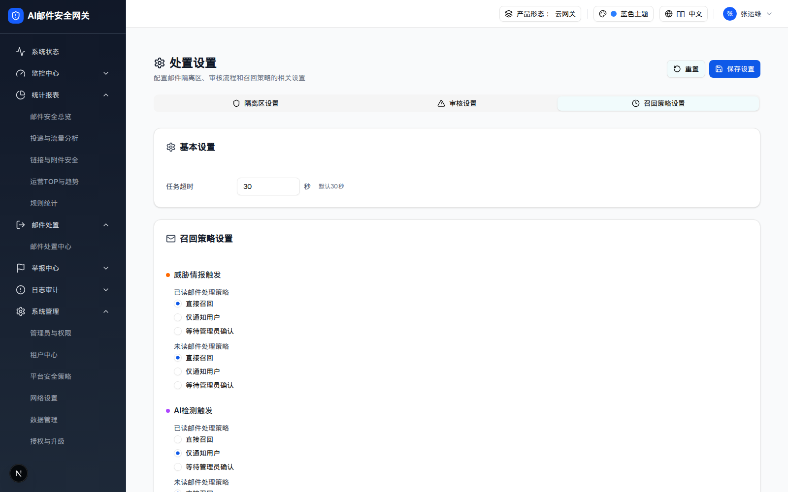

面板结构（3 张卡片）
可切换单选策略、输入并「添加」管理员邮箱（生成 chip，X 可删）、打开通知频率下拉

召回策略设置 Tab 全页截图（demo 运行态）。
卡片 字段 控件 取值 默认
基本设置（Settings） recallTimeoutInput[number] + 「秒」 min=1 max=300 30（提示「默认30秒」） 召回策略 · 威胁情报触发（橙点） threatIntelReadPolicyRadioGroup recall 直接召回 / notify 仅通知用户 / wait 等待管理员确认recallthreatIntelUnreadPolicyRadioGroup recall召回策略 · AI检测触发（紫点） aiDetectionReadPolicyRadioGroup notify（与威胁情报不同）aiDetectionUnreadPolicyRadioGroup recall召回通知设置（Bell） recallNotificationEmailsInput[email] + 「添加」+ chips 回车或点「添加」；去重；无格式校验 ["admin@example.com"] recallNotificationFrequencySelect 实时 / 每小时 / 每日 / 每周 realtime
召回策略矩阵（2 触发源 × 2 已读态 × 3 策略）
触发源 \ 邮件状态 已读邮件 未读邮件
威胁情报触发 直接召回（默认） 直接召回（默认） AI 检测触发 仅通知用户（默认）—— AI 判定对已读邮件更保守 直接召回（默认）
DOM 树比对结果
比对项 demo 实际 DOM 提取的 HTML 是否一致
根节点 div[role=tabpanel][data-state=active]同 一致 后代节点数 116 116 一致 RadioGroup 数 4（2 触发源 × 已读/未读） 4 一致 每组选项数 3（直接召回 / 仅通知用户 / 等待管理员确认） 3 一致 默认选中 recall / recall / notify / recall 同 一致 邮箱 chip 1 个（admin@example.com） 1 个 一致 PRD 提到的召回失败处理 / 时效窗口 本页不存在 不包含 PRD 未定义 → 主文件 §10
与网关的映射
网关 models.DisposalRecallSettings 与本面板完全对应 ：task_timeout_seconds、threat_intel.{read_policy,unread_policy}、ai_detection.{read_policy,unread_policy}、notify_emails、notify_frequency。取值枚举（recall/notify/wait）一致，可直接复用 PUT /api/v1/disposal-settings。